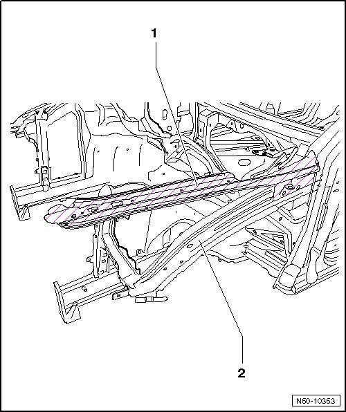
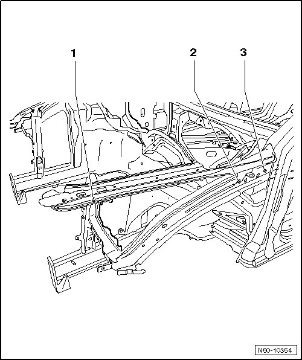
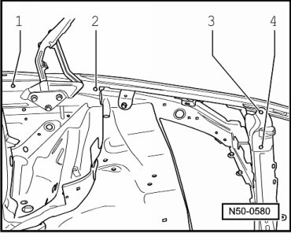

Fender Connecting Plate
Fender Connecting Plate
CAUTION!
Before starting any repairs always follow safety precautions located in.

1 Fender connecting plate
2 Front, upper longitudinal member
Removing

- Remove bolts - 1 -, - 2 - and - 3 -
- Remove bolts - 1 -, - 2 -, - 3 - and - 4 -.

Installation
Replacement part
• Fender connecting plate
- To install, perform the steps used for removal in reverse order.